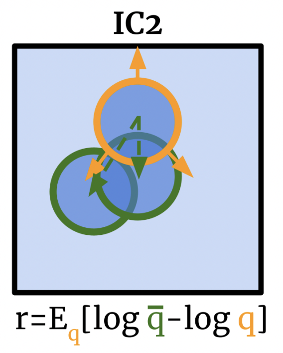

Hello. I'm a PhD student at the Robotics Institute at Carnegie Mellon University. I'm currently a member of the Robots Perceiving and Doing Lab (RPAD), where I am advised by Prof. Dave Held. My general research interests are at the intersection of perception and control. Specifically, I center on the control of robotic systems through model-based machine learning to study how machines can be given greater, safer autonomy.
During my undergraduate study, I was advised by Sergey Levine and mentored by Nick Rhinehart at the Robotic AI & Learning Lab (RAIL) in UC Berkeley.
[CV] [Google Scholar] [Github]
Contact: jennyw2 (at) andrew.cmu.edu
News
- Joined the Robotics Institute at CMU! Excited to work with Dave Held at the Robots Perceiving and Doing Lab (RPAD)
- Paper accepted to NeurIPS 2021! Information is Power: Intrinsic Control via Information Capture.
- ...see all news
Recent Blog Posts
Publications
|  |
Information is Power: Intrinsic Control via Information Capture Advances in Neural Information Processing Systems 34 (NeurIPS 2021)
|